Inhalt Index DeskTop Bronstein

 Funktionentheorie Algebraische und elementare transzendente Funktionen Elementare transzendente Funktionen
Funktionentheorie Algebraische und elementare transzendente Funktionen Elementare transzendente Funktionen


Diese Funktionen sind unendlich vieldeutig und können mit Hilfe des Logarithmus durch die folgenden Formeln dargestellt werden:
| 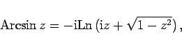 | (14.83a) |
| 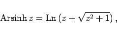 | (14.83b) |
| 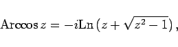 | (14.84a) |
| 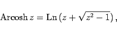 | (14.84b) |
| 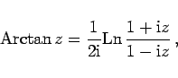 | (14.85a) |
| 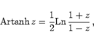 | (14.85b) |
| 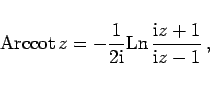 | (14.86a) |
| 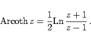 | (14.86b) |
Die Hauptwerte der inversen trigonometrischen und inversen Hyperbelfunktionen drückt man mit denselben Formeln und mit Hilfe des Hauptwertes des Logarithmus  aus:
aus:
| 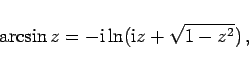 | (14.87a) |
| 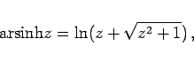 | (14.87b) |
| 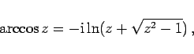 | (14.88a) |
| 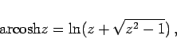 | (14.88b) |
| 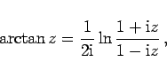 | (14.89a) |
| 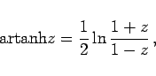 | (14.89b) |
| 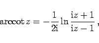 | (14.90a) |
| 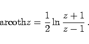 | (14.90b) |